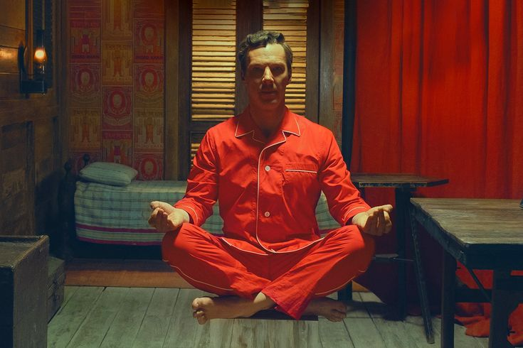
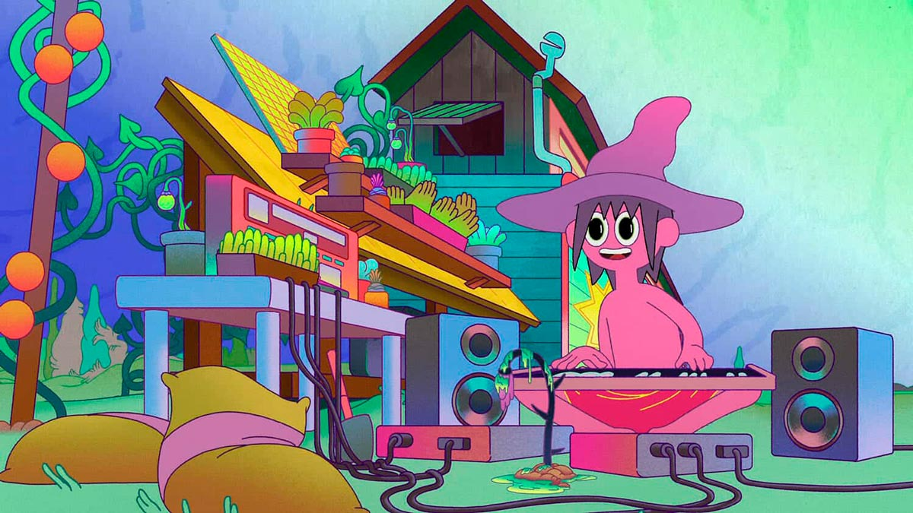

Hay pocos cineastas a los que se les puede reconocer una película viendo un solo fotograma. Uno es Wes Anderson, el director de El Gran Hotel Budapest y Los excéntricos Tenenbaums, quien extrañamente este año tuvo dos premières mundiales en festivales, una en Cannes y otra en Venecia. En el primero, el largo Asteroid City, y en la Mostra hace apenas unas semanas La maravillosa historia de Henry Sugar, un cortometraje basado en un relato de Roald Dahl, el autor de Matilda y Charlie y la fábrica de chocolate.
El corto -deberíamos llamarlo mediometraje- dura 41 minutos, y en él un hombre rico se entera de que hay un gurú que puede ver las cosas sin utilizar sus ojos, y se propone dominar esa habilidad para hacer trampa en el juego. Desde el miércoles está disponible en Netflix.
Anderson es, en sí mismo, todo un personaje. Suele vestir de tonos claros, luminosos como sus películas. En el Hotel Excelsior, en Venecia, recibe al enviado de Clarín con un traje blanco, camisa blanca abotonada hasta el cuello, zapatos marrones y medias al tono.

-En “Henry Sugar” hay actores que interpretan varios personajes. ¿Por qué es la mejor manera de contar tu historia?
-Bueno, no sé cuál es la mejor manera o no… Creo que AMO el teatro y amo la magia de ver que algo realmente sucede en el escenario. Es una vida real que no está sucediendo. Es una creación que está sucediendo. Pero es la vida real, porque son actores reales que interpretan esto. Hay realidad y autenticidad en el escenario.
Entonces, supongo que es simplemente un tipo de narración que me atrae y me encanta. Y en el caso de esto, fue algo que pensé, bueno, la historia en lugar de estar adaptada exactamente para una película, podría ser más como la historia misma. Y entonces parecía un encuentro de teatro y cine, algo así. Y tener actores interpretando los mismos papeles es algo muy teatral.
-Vivimos en un mundo donde las palabras son menos importantes que nunca. Quizás estemos viviendo una guerra con esas imágenes. Pero me pregunto si estás usando tu filmografía de alguna manera, o al menos la última parte de tu filmografía, como dando una respuesta a esta guerra, ahora que hay quienes desean cambiar algunas de las palabras en los relatos de Dahl, relacionadas al peso, la salud mental, al género y a la raza.
-No, no me gusta pensar en cambiar las palabras. La cuestión es que cambio un poco las palabras en la adaptación en lugares donde siento que podría hacerlo un poco más eficiente. Y hay algunos lugares donde vi la oportunidad de hacer algo que pensé que era aburrido, pero un poco mejor. Siento que a veces un cineasta cambia su propio trabajo y dice, aquí está la nueva versión de mi película. No me gusta eso. Siento que cuando vimos la película, vimos la película. Ahora somos parte de ello. El público ahora es parte de ello. Los lectores de un libro ahora son parte de él. El autor ya nos lo dio y ahora también lo poseemos. Y no creo que el autor esté necesariamente autorizado, no necesariamente tiene mi permiso para cambiarlo porque no sabe lo que nos gusta. Ya es demasiado tarde. Ese es mi sentimiento. Entonces, la idea de que alguien que no sea el autor la cambie... El autor está muerto. Creo que sería la peor persona para discutir eso, porque no creo que el autor deba cambiarlo.
-¿Cuál es tu relato favorito de los de Roald Dahl y por qué?
-Bueno, supongo que Henry Sugar fue en el que siempre pensé. Siempre amé Poison (Veneno)... Y también hicimos un cortometraje sobre Poison. Hay uno que se llama The Hitch-Hiker, que siempre me gustó, pero no hicimos el corto. Supongo que cuando era niño me encantaba Charlie y la fábrica de chocolate. Me encanta el Great Glass Elevator (el ascensor en el que suben). Me encantó Boy. Pero luego, de las historias para adultos, hay muchas interesantes como Taste (o La cata), están todas las que fueron adaptadas para The Twilight Zone (la serie La dimensión desconocida) y Tales of the Unexpected. Y todas ellas tienen buenas historias. Hay que divertirse también con las historias.
Mia Goth, el nuevo rostro del terror en Hollywood
POR FIORELLA RAMIREZ
Con 30 años recién cumplidos y una trayectoria en ascenso, la actriz londinense se ha ganado el reconocimiento de la crítica y el público en general
“¡Soy una maldita estrella! El mundo entero va a saber mi nombre, no aceptaré una vida que no merezco”, es el grito icónico de Mia Goth en su personaje de Maxine de la película X. De forma premonitoria, lo que sería el primer protagónico de la actriz terminó consagrándola como una figura emblema del terror, luego de que el título del estudio A24 se convirtiera en una joya elogiada por la crítica.
Aunque la continuación de la saga, titulada Pearl, constituyó un punto de inflexión en su ascendente carrera, Goth ya había esbozado muestras de su versatilidad en proyectos anteriores. En especial, durante su participación en el filme Ninfomanía, dirigida por Lars von Trier, donde compartió escena con Shia LaBeouf, quien más tarde se convertiría en su esposo.
La diversidad cultural ha jugado un papel crucial en la formación de la intérprete. Con raíces en Londres y una infancia en Brasil, ha incorporado esta mezcla de identidad en su construcción de personajes más complejos y multidimensionales. Ella incluso afirmó en una entrevista para Golden Globe Awards que desearía realizar un proyecto en un idioma diferente al inglés, por lo que hay posibilidades de verla actuar —alguna vez— en largometrajes en portugués e incluso español, idioma que también domina. Mientras esperamos las noticias, y con motivo de su cumpleaños número 30, compartimos una lista de películas de terror que, en los recientes años, han calado entre la audiencia cinéfila.
“La cura siniestra” en HBO Max;Dirigida por Gore Verbinski, la película se traslada a los Alpes suizos, donde un joven ejecutivo (Dane DeHaan) es enviado a un centro de rehabilitación con el objetivo de recuperar su empresa. En este enigmático lugar, conoce a Hannah (Goth), una mujer que se convierte en su única compañera durante su angustiante estadía. El filme fue la primera introducción de la artista en el género de terror, y aunque tuvo algunos detractores, su personaje destacó debido a su construcción emocionalmente “cargada e inquietante”, según las reseñas de la crítica.
“X” en Prime Video;El thriller rinde homenaje a los slashers de los años 70 al centrarse en un grupo de cineastas que llegan a una granja aislada para filmar su último proyecto, solo para encontrarse perseguidos por un enemigo inesperado. Aquí Goth interpreta a Maxine, una aspirante a actriz porno con delirios de fama. Aunque el metraje está repleto de escenas sexuales y gore, la historia posee una interesante reflexión sobre el envejecimiento y el comportamiento humano.
“Pearl” en HBO Max; La precuela de X (ambas dirigidas por Ti West) se centra en el personaje de Pearl, una joven que vive en una granja en Texas en 1918 y sueña con escapar de la ruralidad y convertirse en una estrella. La trama explora su transformación mientras abraza su lado más oscuro y errático. La performance de la actriz encarna la desesperación, la frustración y la melancolía, ofreciendo una visión compleja de la lucha por la autoafirmación.
“Suspiria” en Prime Video; Reinterpretación del clásico de terror de 1977 de Dario Argento, la película sigue a Susie Bannion (Dakota Johnson), una joven bailarina que llega a Alemania Occidental para audicionar en la prestigiosa Markos Dance Company, que resulta estar dirigida por un aquelarre de brujas. Goth desempeña el papel secundario pero crucial de Sara Simms, una joven que investiga los motivos de la desaparición de su compañera en la institución
“Secretos ocultos” en Prime Video; Un thriller psicológico de bajo presupuesto pero igualmente efectivo es Marrowbone (título original), el cual se centra en una familia de hermanos huérfanos que viven en una casa de campo aparentemente embrujada. Jane (Goth), es la hija mayor de entre todos los hermanos, por lo que su inteligencia emocional resulta relevante para enfrentar conjuntamente la muerte de su madre, un padre abusivo, y presencias paranormales. El elenco también es encabezado por Anya Taylor-Joy, George MacKay y Charlie Heaton.
The Midnight Gospel: ¿Cómo verla sin enloquecer en el intento?
POR NAYLA LOZA
En un principio, The Midnight Gospel parece una serie animada como cualquier otra que podría crear Pendleton Ward, el padre de Hora de aventura, con su estilo desbocado, lisérgico y repleto de hipérboles color pastel. Algo que no sería poca cosa y estaría muy bien. Además, la idea básica es simple pero abierta a miles de posibilidades: Clancy es un chico fucsia que se compra un simulador de universos de segunda mano que le permite viajar a distintos planetas y entrevistar a personajes de lo más variados para su podcast espacial llamado The Midnight Gospel.
Empieza el primer capítulo y todo parece bastante convencional -dentro de lo que la mente delirante de Ward permita-, hasta que Clancy se encuentra con su primer entrevistado y empiezan a hablar sin parar de temas profundos y delicados mientras se embarcan en frenéticas aventuras apocalípticas sin relación alguna con la charla. Acá la serie se parte en dos: por un lado va la imagen, y por el otro las palabras, ambas con una carga densísima de información. Ante tanto estimulo disociativo, nuestro cerebro también corre peligro de partirse. ¿Qué pasó?
Lo que sigue son algunas puntas para sacarle un mayor provecho a este gran artefacto audiovisual, tan extraño e inédito por las nuevas formas de atención y consumo que requiere. Y no, claramente no es para niños. Ni para todo el mundo.

El podcast originario
Lo que pasó es que las charlas de Clancy son entrevistas reales a personas reales de este mundo (aunque algunos no lo parezcan) y fueron hechas previamente para un podcast también real y preexistente. Son fragmentos de The Duncan Trussell Family Hour (TDTFH), un podcast de culto en Estados Unidos que ya está por llegar a las 400 emisiones. Como su nombre lo indica, lo conduce Duncan Trussell, quien ya lleva casi dos décadas en el mundillo de la comedia como guionista y actor en pequeños papeles pero que fuera de su país no lo conoce nadie. Ward sí lo conocía y era fan de TDTFH, así que cuando dejó Hora de aventura en 2014 le sugirió a Duncan animar su podcast. Y así nació el híbrido (¿será el origen de un nuevo formato?): Ward se encargó de la animación y Duncan le puso la voz a Clancy, seleccionó clips de su programa, y sumó canciones propias en los créditos finales de cada episodio. De esta manera, The Midnight Gospel corre por dos vías paralelas que raramente se tocan, y si todo se vuelve demasiado, se puede optar por una sola vía igual de interesante. Se puede poner en mudo y flashear con la animación, se puede subir el volumen, ajustar doblaje de ser necesario, y escuchar mientras se limpia la casa. Se puede repetir de una u otra forma y siempre aparecerán detalles nuevos. Pero claro, el verdadero desafío está en el consumo integral del programa como un todo.
Las personas detrás de las entrevistas
Esta primera temporada (una segunda aún no ha sido confirmada) consta de ocho capítulos que, por suerte para nuestra salud mental, no pasan de la media hora de duración. En cada uno hay un Clancy/Duncan en la forma de un avatar diferente, un planeta al borde del colapso, y un entrevistado de cierto sector contracultural estadounidense, compartiendo opiniones sobre drogas, meditación y cómo lidiar con la muerte, entre otras cuestiones existenciales. Son conversaciones que uno no tiene muy seguido sobre temas que tratamos de evitar. Son diálogos fuertes y densos, pueden abrirte la cabeza o angustiarte, o las dos. Y a eso encima se le agrega la vorágine visual. Maratonear está contraindicado.